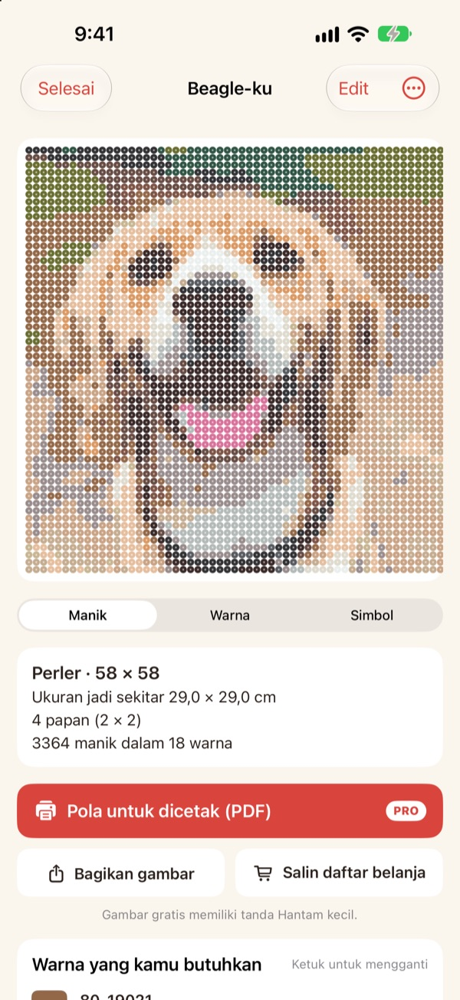
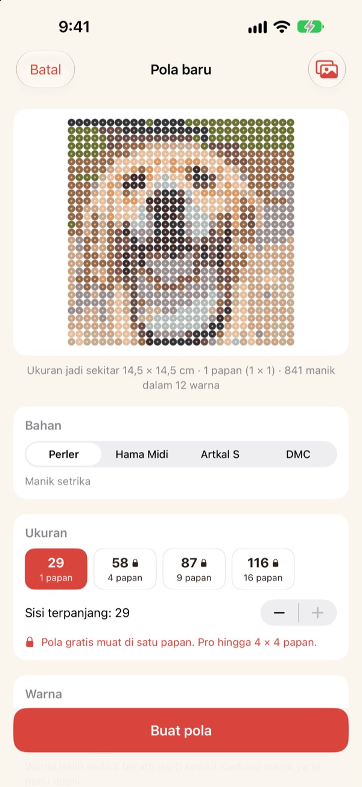
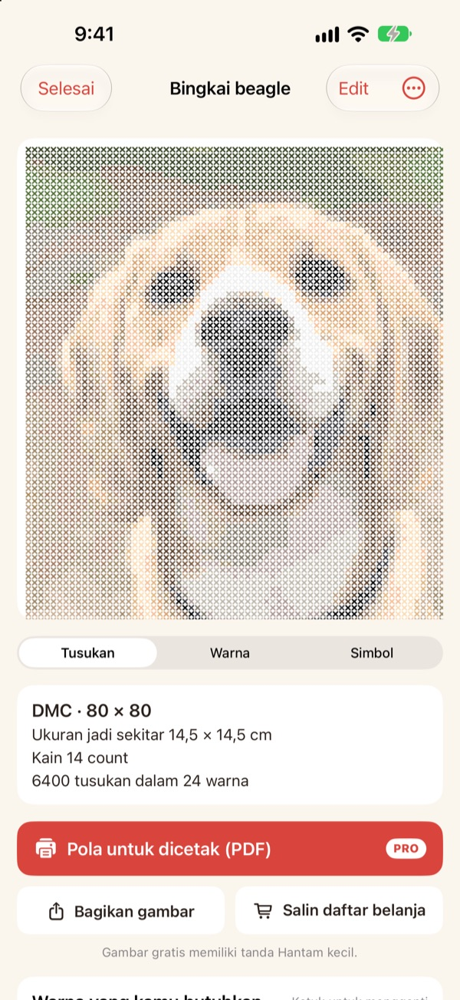
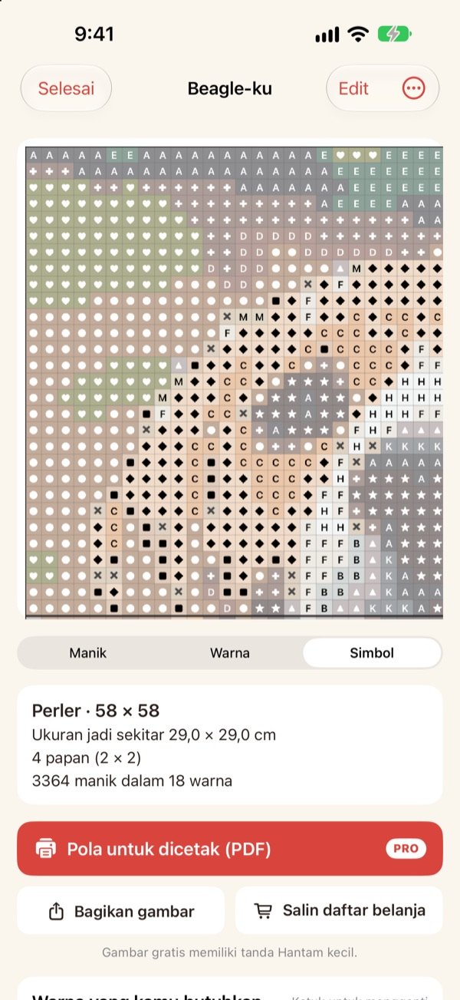
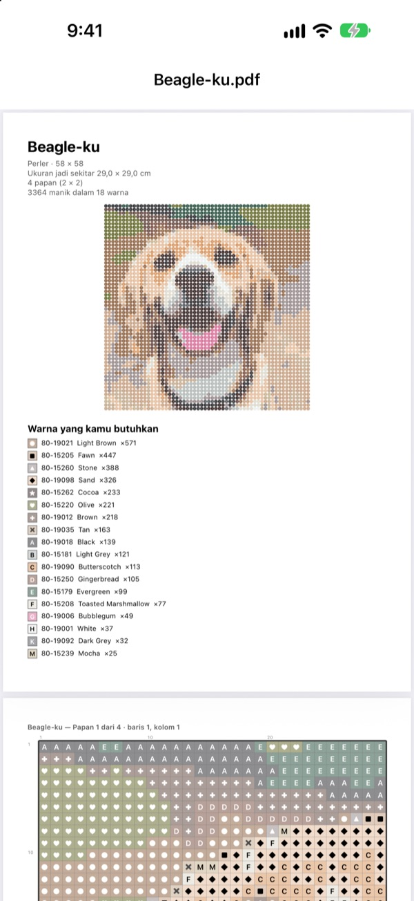

Satu foto
jadi satu pola
Pilih foto hewan peliharaan, wajahmu, atau karakter favorit. Hantam mengubahnya jadi pola manik setrika atau kristik, dengan warna yang bisa kamu beli.
Gratis untuk pola seukuran satu papan. Foto tidak keluar dari iPhone-mu.

Coba dengan foto
Cara mencocokkan warnanya sama dengan di aplikasi, memakai bagan warna asli Perler. Ubah ukuran dan jumlah warna, atau coba fotomu sendiri.
Membuat pola itu mudah. Mencocokkannya dengan manik asli yang sulit
Kalau foto dibuat piksel di aplikasi edit biasa, hasilnya warna yang tidak dimiliki manik atau benang mana pun. Lalu kamu harus menebak tiap kotak pakai manik dari toples mana dan menghitung sendiri berapa yang harus dibeli. Hantam hanya memilih dari warna yang benar-benar dijual dan memberi tahu jumlah pastinya.
Warna asli, nomor asli
Pilih manik Perler, Hama Midi, Artkal S, atau benang DMC. Tiap kotak mendapat warna yang benar-benar dijual merek itu, lengkap dengan nomornya.
Ukuran dan jumlah warna kamu tentukan sendiri. Pola besar dibagi per papan 29 × 29.

Bisa untuk kristik juga
Pilih benang DMC dan foto yang sama jadi pola kristik. Pilih kain Aida 11, 14, 16, atau 18, lalu Hantam menunjukkan ukuran jadi dan jumlah tusukan tiap warna.

Tahu persis apa yang dibeli
Beralih ke pola simbol untuk mengikuti kotak demi kotak, dengan garis tebal di tiap tepi papan atau setiap 10 tusukan. Lihat berapa manik tiap warna, lalu ketuk Salin daftar belanja sekali saja.
Ketuk kotak untuk mengubahnya, atau ganti satu warna dengan warna lain di seluruh pola.

Cetak lalu mulai
Dengan Pro, ekspor Pola untuk dicetak (PDF): halaman pertama berisi daftar warna, lalu pola simbol per papan.

Tiga langkah menuju pola
- 1
Pilih foto
Hewan peliharaan, wajah, logo, atau karakter, semuanya bisa. Foto dengan objek utama yang jelas hasilnya paling bagus.
- 2
Pilih manik atau benang
Tentukan merek, ukuran, dan jumlah warna.
- 3
Mulai buat
Ikuti pola di layar, atau cetak dengan Pro.
Bahan dan ukuran
- Perler · Hama Midi · Artkal S
- Manik setrika, papan 29 × 29, tiap manik sekitar 5 mm
- DMC
- Benang kristik di kain Aida 11, 14, 16, atau 18
- Gratis
- Manik sampai 1 papan (29 kotak), benang sampai 40 tusukan di sisi terpanjang
- Pro
- Manik sampai 4 × 4 papan (116 kotak), benang sampai 200 tusukan
- Warna
- 2 sampai 50 per pola
Perler, Hama, Artkal, dan DMC adalah merek dagang milik pemiliknya masing-masing. Hantam tidak berafiliasi dengan mereka. Warna di layar bisa sedikit berbeda dari aslinya.
Mulai gratis. Pola besar dan cetak pakai Pro.
Gratis
- Pola sampai satu papan atau 40 tusukan
- Semua merek: Perler, Hama, Artkal, dan DMC
- Jumlah per warna, daftar belanja, dan ganti warna
- Simpan sampai 3 pola
- Bagikan gambar dengan tanda kecil Hantam
Hantam Pro
- Pola PDF untuk dicetak
- Sampai 4 × 4 papan atau 200 tusukan
- Simpan pola tanpa batas
- Gambar tanpa tanda
- Semua alat pixel art
Langganan bulanan atau tahunan, atau sekali bayar seumur hidup
Kamu juga bisa menghadiahkan Pro ke teman langsung dari aplikasi.
Pertanyaan umum
Apakah fotoku diunggah ke suatu tempat?
Tidak. Foto dan pola diproses dan disimpan hanya di iPhone-mu.
Warnanya agak beda dengan manikku.
Layar menampilkan warna berbeda dari plastik dan benang asli. Ketuk warna di daftar untuk menggantinya dengan warna yang lebih mirip dari merek yang sama.
Seberapa besar pola bisa dibuat?
Versi gratis muat satu papan 29 × 29 atau 40 tusukan di sisi terpanjang. Dengan Pro sampai 4 × 4 papan (116 manik) atau 200 tusukan.
Foto seperti apa yang hasilnya bagus?
Foto dengan satu objek dan latar sederhana. Makin sedikit warna, makin rapi polanya, jadi kalau terlihat ramai, kurangi jumlah warnanya.
Masih bisa bikin pixel art?
Bisa. Mengubah foto jadi piksel, menggambar mengikuti 110 contoh, dan animasi per bingkai masih ada. Semua alat pixel art ada di Pro.
Bagaimana memulihkan pembelian?
Buka pengaturan di aplikasi lalu ketuk Pulihkan Pembelian. Gunakan Akun Apple yang sama dengan saat membeli Pro.
Bagaimana membatalkan langganan?
Buka Pengaturan iPhone › namamu › Langganan, lalu pilih Hantam. Akses seumur hidup dibayar sekali dan tidak diperpanjang.
Bagaimana melaporkan masalah atau memberi ide?
Paling cepat lewat kirim masukan di pengaturan aplikasi. Kamu juga bisa mengirim email ke alamat di bawah atau DM Instagram (@lee25_ios).
Pertanyaan, laporan masalah, dan ide bisa dikirim ke leeo@kakao.com.